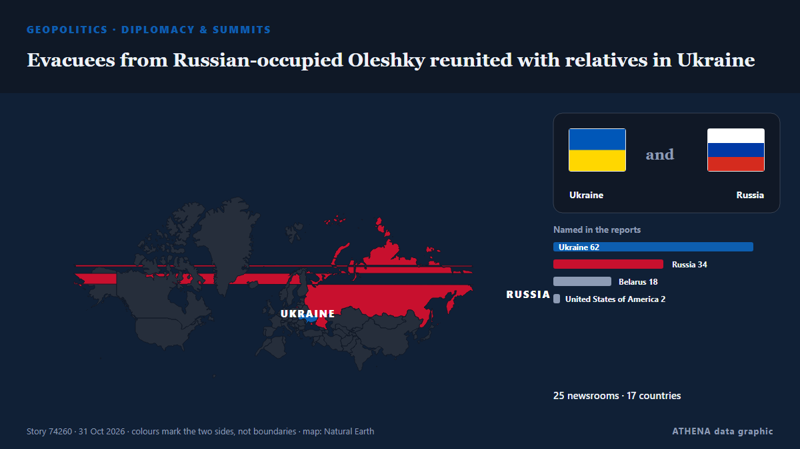

Evacuees from Russian-occupied Oleshky reunited with relatives in Ukraine

Russia and Ukraine have not specified how many people chose to leave the city. από The Irish News (Belfast)
Αναφέρθηκε ανεξάρτητα από 25 μέσα σε 17 χώρες από τις 31 Οκτ, πρώτο το BelTA (English) — page reader· η κάλυψη κορυφώνεται. Το ATHENA εκτιμά τον κίνδυνο μέτριο (3.9/10), κυρίως λόγω της σοβαρότητάς του και του ρυθμού κάλυψης. Βεβαιότητα 89% (υψηλή): το επιβεβαιώνουν 25 ανεξάρτητα μέσα, μέση αξιοπιστία 76%. Μέσα ανά χώρα: Ηνωμένο Βασίλειο (7), Ουκρανία (4), Λευκορωσία (3). Κάλυψη: 31 Οκτ έως 31 Οκτ, 13 ώρες.
Γιατί έχει σημασία: Η πλήρους κλίμακας εισβολή της Ρωσίας στην Ουκρανία ξεκίνησε τον Φεβρουάριο του 2022. Η σελίδα παρακολουθεί τις μάχες, τα πλήγματα σε υποδομές και τη διπλωματία γύρω από τον πόλεμο, όπως τα καλύπτουν μέσα από όλο τον κόσμο.
Τι άλλαξε: 31 νέες αναφορές από 26 μέσα στο 24ωρο έως 31 Οκτ.
Πρώτη διατύπωση: 08:58 Belarus Red Cross chief: We are ready to offer warmth, comfort to everyone in need Society
Οι τίτλοι των ειδήσεων παρουσιάζονται στα αγγλικά, όπως δημοσιεύτηκαν.
Με μια ματιά
Επιλέγεται, βαθμολογείται και γράφεται από τη δημοσιευμένη μεθοδολογία του ATHENA. Κανένας συντάκτης δεν παρεμβαίνει σε μεμονωμένα γεγονότα. Πώς παράγεται ›
| 31 Oct 06:34 UTC | 1 |
|---|---|
| 31 Oct 07:34 UTC | 0 |
| 31 Oct 08:34 UTC | 2 |
| 31 Oct 09:34 UTC | 0 |
| 31 Oct 10:34 UTC | 1 |
| 31 Oct 11:34 UTC | 3 |
| 31 Oct 12:34 UTC | 7 |
| 31 Oct 13:34 UTC | 3 |
| 31 Oct 14:34 UTC | 3 |
| 31 Oct 15:34 UTC | 3 |
| 31 Oct 16:34 UTC | 5 |
| 31 Oct 17:34 UTC | 2 |
| 31 Oct 18:34 UTC | 1 |
| 31 Oct 06:44 UTC | 0.0 |
|---|---|
| 31 Oct 13:25 UTC | 1.6 |
| 31 Oct 13:37 UTC | 2.8 |
| 31 Oct 13:42 UTC | 3.4 |
| 31 Oct 14:54 UTC | 2.6 |
| 31 Oct 15:01 UTC | 3.3 |
| 31 Oct 19:17 UTC | 3.9 |
Γιατί αυτοί οι αριθμοί
Σημασία
Κίνδυνος
Βεβαιότητα
Η κάλυψη — ποιος το ανέφερε και πότε
ο τίτλος όπως δημοσιεύτηκε · ανοίγει το πρωτότυπο- BelTA (English) — page reader · Λευκορωσία08:58 Belarus Red Cross chief: We are ready to offer warmth, comfort to everyone in need Society
- BelTA (English) — page reader · Λευκορωσία11:08 ‘No drones and shells here’: Oleshky evacuee shares relief after reaching Belarus Society
- BelTA (English) — page reader · Λευκορωσία10:36 Three planes carrying Oleshky evacuees land in Belarus Society
- Al Jazeera English · ΚατάρEvacuees from Russian-occupied Oleshky arrive in Ukraine via Belarus
- The Moscow Times · ΡωσίαOleshky Evacuees Arrive in Ukraine
- The Irish News (Belfast) · Ηνωμένο ΒασίλειοEvacuees from occupied Oleshky arrive in Belarus en route to Ukraine
- Belfast Telegraph · Ηνωμένο ΒασίλειοEvacuees from occupied Oleshky arrive in Belarus en route to Ukraine
- Türkiye Today · ΤουρκίαOleshky evacuees reach Belarus under Melania Trump-brokered ceasefire
- CBC News (alternative feed) · ΚαναδάςCivilians evacuated from Russian-occupied Oleshky arrive in Ukraine-held territory
- Ukrainska Pravda (English) · ΟυκρανίαEvacuees from Oleshky have arrived in Ukraine, says Zelenskyy – photo, video
- Kyiv Independent · ΟυκρανίαOleshky residents reach Ukrainian-controlled territory after escaping Russian occupation
- Bangkok Post — page reader · ΤαϊλάνδηEvacuees from Russian-occupied city due in Ukraine
- Egypt Independent · ΑίγυπτοςOleshky evacuees return to Ukraine under Melania Trump-brokered ceasefire
- Kyiv Post · ΟυκρανίαOleshky Evacuees, Aid Delegation Cross Border Into Ukraine
- TheJournal.ie · ΙρλανδίαEvacuees from Russian-occupied Oleshky arrive in Ukraine under Trump-brokered deal
- Anadolu Agency (English) · ΤουρκίαZelenskyy says evacuees from Oleshky crossed into Ukraine's Chernihiv region
- Ukrinform (English) · ΟυκρανίαOldest evacuee from Oleshky is 94, Lubinets says
- ABC News Australia · ΑυστραλίαEvacuees from Russian-occupied Oleshky reach Ukraine amid ceasefire
- Belfast Telegraph · Ηνωμένο ΒασίλειοEvacuees from Russian-occupied Oleshky reunited with relatives in Ukraine
- The Irish News (Belfast) · Ηνωμένο ΒασίλειοEvacuees from Russian-occupied Oleshky reunited with relatives in Ukraine
- DW English · ΓερμανίαUkraine news: Evacuees from Russian-occupied Oleshky reach Kyiv-controlled territory
- The Jerusalem Post · ΙσραήλUkrainian evacuees reach Belarus as Melania Trump-brokered Oleshky ceasefire takes effect
- Times of India · ΙνδίαOleshky evacuees reach Ukraine after taking a detour through Russia
- BBC News · Ηνωμένο ΒασίλειοEmotional reunions with loved ones for Oleshky evacuees
- ABC News (International) · Ηνωμένες ΠολιτείεςEvacuees reunite with family at the Ukrainian-Belarusian border after fleeing Oleshky
- The Hill · Ηνωμένες ΠολιτείεςEvacuees from Russia-controlled Oleshky arrive back in Ukraine amid U.S.-brokered ceasefire
- The Straits Times · ΣιγκαπούρηForced to eat grass, Oleshky evacuees say Russia-Ukraine truce was a ‘blessing’
- The Independent · Ηνωμένο Βασίλειο‘We escaped from hell’: Hundreds of starving Ukrainians return home from Russian-occupied Oleshky under ceasefire deal
- People Daily · ΚένυαUkrainian evacuees reunite with family after years of being trapped in Russia-occupied city
- Al Jazeera English · ΚατάρEvacuees of Russian-occupied Oleshky reunited with families
- The Guardian · Ηνωμένο ΒασίλειοOleshky evacuees reunite with families after truce allows crossing back into Ukraine